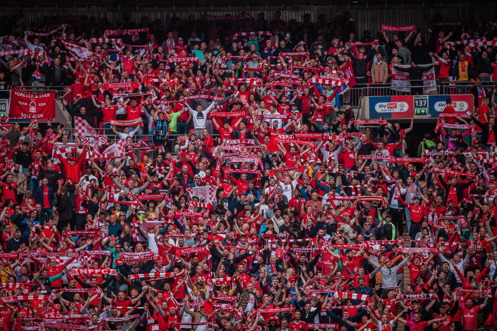

Nottingham Forrest FC
Nottingham Forest Football Club, often referred to as Forest, is a professional football club based in West Bridgford, Nottinghamshire, England. Founded in 1865, Forest are now considered the oldest football league club in England after the relegation of Notts County to the National League in 2019. Since 1898, Forest have played their home matches at the City Ground. They currently compete in the premier league, the top tier of the English football league system.
